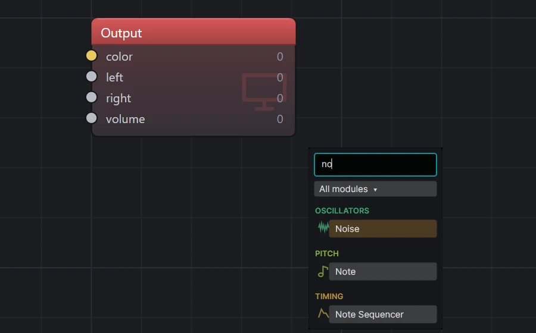
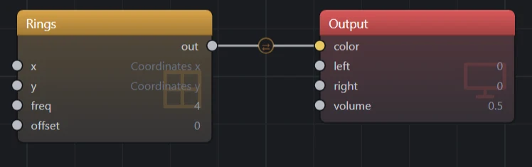
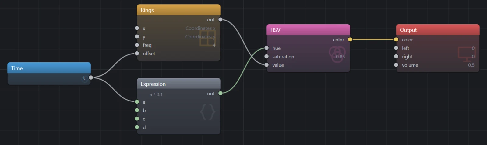
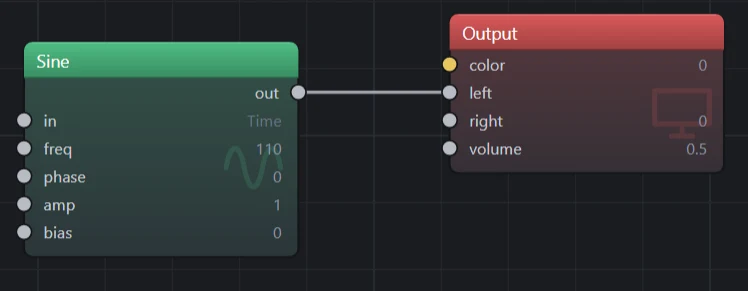
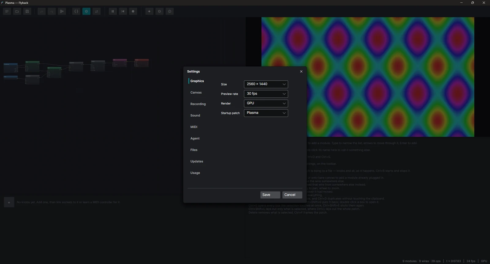

01A tour of the window
Flyback opens with a patch already playing. The window has four parts: the toolbar across the top, the canvas where modules are wired, the preview on the right, and under the preview the inspector, which shows hints until you select a module.
| Button | What it does |
|---|---|
| Presets | Replaces the patch with a built-in one or one of yours, or saves it as one of yours. |
| Open, Save | Reads or writes a .fbk patch, a .fbkb bundle, or a .fbks text file. Ctrl+O and Ctrl+S. |
| Undo, Redo | Ctrl+Z and Ctrl+Y (or Ctrl+Shift+Z). |
| Tidy | Lays the modules out left to right, shutting boxes if the drawing will not otherwise fit. Ctrl+L, and undoable. Ctrl+click, or Ctrl+Shift+L, lays out only what is selected. |
| Code | Shows the patch as text. F2. |
| Knobs | Shows the knob panel under the canvas. Ctrl+K. |
| Swap | Trades the preview and the canvas, for a bigger picture while you patch. |
| Pause, Rewind, Record | Holds the picture and the sound where they are, or plays on (Ctrl+P); sets the clock back to zero; and starts or stops a live recording — counted in, as the Recording settings say (Ctrl+R). |
| Assistant, Settings, Plugins, About | A model that builds patches, the settings window, what is installed and what failed to load, and the version and license. |
Double-click the preview to give it the whole window; double-click again or press Esc to come back. Hover the bottom right corner of the full-screen picture for the sound, rewind and pause buttons. A patch with knobs keeps them behind the dots at the bottom middle, to be played. Settings → Graphics → Full screen can send the picture to another monitor instead, or to one you pick, and the editor stays where it is. On the canvas, drag the background to select, drag with the middle button to pan, and use the wheel to zoom. Ctrl+F frames the whole patch. Esc backs out of a drag part way through it — a module goes back where it was, a wire back onto the socket it was lifted off.
02Your first patch
Start from nothing. Open Presets and choose Empty, the first of the built-in presets, under BLANK. The canvas now holds only the Output, which every patch has and which cannot be removed. The status bar says nothing is wired into it yet.
- Point at an empty part of the canvas and press Space (or right-click). The module list opens where you are pointing.
- Type
rings. The list narrows as you type, and the first match is highlighted, so press Enter to add it. - Drag from the round socket beside Rings'
outto the Output'scolorsocket.


The preview shows gray rings. You did not wire anything into Rings' x and
y, but they read Coordinates x and Coordinates y. Position sockets are
normalled: like the unplugged jack on a hardware synth, they already carry the signal
you would normally plug in. Wire something into one and that takes over; unplug it and the default comes
back.
Select Rings and the inspector shows a slider for every socket that is not wired. Drag freq
and the rings tighten as you drag: every edit recompiles the patch, and the picture never stops.
03Make it move
A signal that changes over time is what makes a patch move. The Time module outputs
t, the clock in seconds.
- Add a Time module and wire
tinto Rings'offset. The rings start to move, one ring's width every second. - Add an HSV module (it is in the Color family). Rewire Rings'
outinto HSV'svalue, and HSV'scolorinto the Output'scolor. Dragging a connected input picks its wire up, so you can move the wire rather than drawing a new one. - The new wire turns orange, and the status bar says why: Rings swings from −1 to 1, and HSV's
valuetakes 0 to 1, so the lower half of every ring falls off the bottom as black. Click the ⇄ mark on the wire. An Auto remap goes into it and fits the whole swing into whatvaluetakes. - Add an Expression (it is in the Maths family), type
a * 0.1as its formula in the inspector, wiretinto itsa, and wire itsoutinto HSV'shue. The hue now goes round the color wheel once every ten seconds. Typing Multiply in the module list finds the same thing, witha * bfilled in. - Set HSV's
saturationto about0.85.

The rings now travel and slowly change color, each one fading to black and back. There is no special "animation" feature: everything that moves in Flyback is a signal wired into a socket.
04Make a sound
The Output has two more sockets, left and right. Whatever is wired into them is
played through the speakers. right copies left until something is wired into it,
so a mono patch is stereo already.
- Add a Sine and wire its
outinto the Output'sleft. At its startingfreqof 1 it is a wobble once a second, too slow to hear. - Turn
frequp. The knob sweeps in decades: its lower half is slow wobbles, its upper half is pitch, up to 20 kHz. Type110and you hear a low A. - Use the Output's
volumeto set the level. At zero, the sound device is closed.

The Sine's in is normalled to Time. That is what makes an oscillator oscillate as soon as it
is placed. In the rings patch you wired a position into Rings instead, which is why it drew across the
screen rather than changing over time. The input a module reads across decides what it does: Coordinates
for a picture, Time for a sound.
Flyback compiles the patch once. The preview runs that program for every pixel with x and
y set to the pixel's position, and the sound runs it for every sample with t
advancing at the sample rate. Only the parts that reach color are drawn, and only the parts
that reach left and right are heard.
05One signal, both sinks
Now for the idea Flyback is built around: one module that the eye and the ear both follow.
- Add another Sine and set
freqto0.15,ampto0.5andbiasto0.5. It now swings slowly between 0 and 1, once every six or seven seconds. Double-click its name in the inspector and call it slow. - Wire slow into HSV's
hue, in place of the Expression. Delete the Expression. - Add an Expression with the formula
a * bbetween the tone and the Output: the tone Sine intoa, slow intob, and itsoutintoleft. - Press Ctrl+L to tidy the layout.
This is the Drone preset, built by hand. Open Drone from the preset gallery to compare.
06The patch as text
Press F2. The canvas is replaced by the same patch written in Flyback's text language. The text is not an export: it builds back into exactly the same program, and you can work in either view.
# One slow oscillator setting both the hue of the image and the tremolo on the tone.
let slow = sine(freq: 0.15, amp: 0.5, bias: 0.5)
sine(freq: 110) * slow |> out.left
rings(freq: 3, offset: t)
|> autoremap()
|> color.hsv(value: _, hue: slow, saturation: 0.85)
|> out.color
out.volume = 0.6Read |> as a wire. Its left side is plugged into the module on its right: into
in if the module has one or into its only socket, a color into a module's one color socket,
otherwise into the socket written as _, like
value: _ above. Named arguments set knobs or take other wires, and a wire from a chain of its
own is a let above, never a pipeline inside the brackets. x, y and t are
Coordinates and Time, and arithmetic such as a * b is an Expression, one block that computes
the whole sum. A line of off slow switches that module off, which is
Ctrl+B on the canvas: what is patched into it comes straight out of it, and nothing
does where nothing is patched in. A line of description "..." says what the patch is for; it is
what the panel shows with nothing selected, where a double-click edits it, and what the preset gallery
shows under a saved preset's name. Under it, author "..." says who made the patch and
tags "drone" "slow" gives it words to find it by; the panel edits both the same way.
- Change
rings(freq: 3torings(freq: 8. - Press Ctrl+Enter (or Apply) to build the text. The preview updates straight away.
- Save. Once the text is the document the dialog offers
.fbksfirst, which keeps the text as you wrote it; saving as a.fbkor a bundle hands the patch back to the canvas, and asks first if the text has not been saved. When you open a text file, the text owns the patch, and the canvas is a view of it until you press Edit on the canvas.
group block's first line and it shows the group; letting go of a slider writes the new value
into the text.A module's short name is the last part of its type id, so osc.sine is sine.
When two installed modules share a short name, the text has to use the full id. With the Picture plugin
installed, hsv could be either color.hsv or flyback.picture.hsv, so
write color.hsv. The language
reference covers the rest, including a transcription of every preset.
07Play it from a keyboard
The MIDI In module has four outputs: pitch (the note number),
gate (high while a key is held), velocity and trigger (a pulse at the
start of each note). With a MIDI keyboard connected, pick it on the module's listens to
field, and set channel to hear one of its channels rather than all of them, which is how
each track of a drum machine gets a module of its own. For an instrument Flyback knows by name, such as the
Elektron Syntakt, the channel is picked as a track. Without a controller, the computer keyboard plays instead. Settings → MIDI names the
plugin doing the hearing and sets whether the first MIDI In added to a patch lays the computer keyboard out as a
piano or as a scale.
An instrument Flyback knows by name is also at the top of the module list, under Instruments, while it is plugged in. Picking it adds the whole box: a Clock In and a MIDI In per track, each on its channel and named after it. Delete the tracks you will not use.
A drum machine or hardware sequencer sending MIDI clock conducts the patch through a Clock In,
under Timing. Its beats count from the machine's Start at the tempo it is sending and hold while it
is stopped: patch them into a sequencer's in and set the sequencer's rate in steps per beat, and
every Tempo, Euclid and LFO downstream keeps to the machine's bar in the picture and the sound at once.
bpm is the tempo, running is high between Start and Stop, and reset
fires on Start. Pick the machine on the module's follows field.
# Z to M plays C3 to B3, Q to U the octave above.
let key = midi.in()
let pitch = key.pitch |> note(note: _)
let pluck = key.gate |> adsr(gate: _, attack: 5ms, decay: 300ms, sustain: 0.4, release: 400ms)
let bands = key.pitch |> remap(48..84, 2..12)
sine(freq: pitch) * pluck |> out.left
rings(freq: bands, offset: t)
|> color.hsv(saturation: _, hue: key.pitch / 12, value: key.gate)
|> out.color
out.volume = 0.5- Note turns a note number into hertz. ADSR shapes the gate into an envelope, so notes fade in and out instead of clicking.
- The bottom letter row is the white keys from C3, with the black keys on the row above it; the Q row and the number row above it are the same an octave up. PgUp and PgDn move both rows by an octave.
- To play a scale instead, select a MIDI In, set layout under
computer keyboard to Scale and pick notes, as on a Quantiser. The picked notes sit side by
side from A, with the Q row an octave up and the Z row an octave down:
seven notes are A to J, five are A to G. The layout belongs
to the patch and is saved with it; in text it is the line
keyboard scale [ C D E G A ]. - Keys only play while the patch actually reads a MIDI In and you are not typing into a box, so click the canvas or the preview before you play. Ctrl shortcuts keep working while you play.
- For chords, add more MIDI In modules and give each its own voice index in the inspector.
The Played preset is a finished example: four plucked strings into a reverb.
08Knobs and MIDI controllers
A patch can carry a panel of knobs for the settings you want to perform with. Turning one changes the playing patch without recompiling it, and recording captures the moves.
- Press Ctrl+K to show the knob panel under the canvas, and press + to add a knob.
- Click the knob's name, then click socket rows on the canvas to link them to it. Each socket follows the knob over its own range, in decades for a frequency. Click a linked row again to let it go, and press Esc when done. Logarithmic in the knob's menu sweeps any range in decades.
- To turn it from hardware, open the knob's menu and choose Learn MIDI controller, then move a control; Learn this and every knob after it walks the rest of the panel, one control per knob, until Esc. An instrument Flyback knows by name, such as the Elektron Syntakt, is also under Bind to in the same menu, track by track and knob by knob, and a knob bound either way says what it follows in the instrument's own words. Settings → MIDI lists the instruments known, says where a profile of your own goes, and sets whether a controller jumps straight to its position or picks the value up when it passes it.
Knobs are renamed, reordered and removed from the same menu, and are saved with the patch.
09Keep a big patch tidy
- Select by dragging the background, Ctrl+click to add to the selection, or Ctrl+A for everything. Delete removes the selection.
- Group a selection into one box with Ctrl+G. The box lists the sockets that cross its edge. Double-click it to look inside: its modules come up over the rest of the patch until Esc or a click outside. Ctrl+Shift+G ungroups. Ctrl+E and Ctrl+Shift+E open and close every box the selection touches.
- Switch off a module, a selection or a whole box with Ctrl+B to hear the patch without it. What is patched into it comes straight out of it, and nothing does where nothing is patched in, so an effect passes the signal on and a voice falls silent. The same key puts it back. To hear it for a moment, hold the right button down on a module or a shut box: it is off until you let go, or on if it was off.
- Copy and paste with Ctrl+C and Ctrl+V. What is copied is a small patch file, so you can paste it into another patch or a text editor.
- Rewire quickly. Drag from a socket onto empty canvas to add a module that is already plugged in. Ctrl+drag an output that has one wire to feed that wire from somewhere else.
- Carry a signal without a wire with a Send and a Receive on the same bus. Whatever is
patched into the Send comes out of every Receive on its bus, so a kick at one end of the patch can key a
Duck at the other. Select either end to see its partners. Retype a Send's bus and its Receives follow; paste a copy of
both and the copy gets a bus of its own. In text they are
send(bus: "kick")andreceive(bus: "kick"). - Tidy with Ctrl+L, and frame everything with Ctrl+F. A patch too wide for the canvas with every box open has its widest boxes shut until the drawing fits, and the status line says which.
- Tidy one corner with Ctrl+Shift+L, or Ctrl+click on the Tidy button. Only the selected modules move, they stay where they already were rather than going to the middle of the canvas, and the view does not shift. A box is laid out whole or not at all, so select all of one to include it.
10Record and render
Record a live take
Press Ctrl+R (or Record), choose a file and play. The video
kind records the picture from the GPU with the sound alongside it; the sound kind records the sound only.
Once the file is named the status bar counts three seconds in — press Ctrl+R
during the count to call it off — and then the clock goes back to zero, so the take starts where the
patch does. Both are yours to set: Settings → Recording picks the count-in, or
None to start on the press, and Rewind to zero first can be switched
off to record a session as it stands. A take runs until you press Ctrl+R again,
and it includes every knob you turn and every note you play — a fade of the Output's
volume to zero included, which is recorded as the silence it is. The picture size is set under
Settings → Graphics, and the frame rate, quality and both formats under
Recording.
Which formats you can choose depends on whether ffmpeg is on the machine. MP4 (H.264 or H.265), WebM
and MOV for the picture, and MP3, M4A and FLAC for the sound, are encoded by ffmpeg — found on your
PATH, or pointed at by hand in the same tab, which also says what it found. Motion JPEG AVI
and WAV are written by Flyback itself and need nothing installed; they are also around twenty-five times
the size of an MP4 of the same clip, and an AVI cannot pass 4 GB, so they are the fallback rather
than the choice.

Render exactly with the command line
flyback-cli ships beside the app and runs the same engine without the window. A render is
repeatable: the same patch and the same options give the same file. A size, frame rate, quality, format or
ffmpeg left out is the editor's, from its preview size and Settings → Recording, and
--settings reads them from another output.json.
# a still frame, 2.5 seconds in
flyback-cli render drone.fbk -o drone.png --size 1920x1080 --at 2.5
# 30 seconds of video with sound, and the sound on its own
flyback-cli render drone.fbk -o drone.mp4 --seconds 30 --fps 30
flyback-cli render drone.fbk -o drone.mp3 --seconds 30
# the extension picks the format, and needs no ffmpeg for these two
flyback-cli render drone.fbk -o drone.avi --seconds 30 --fps 30
flyback-cli render drone.fbk -o drone.wav --seconds 30
# an ffmpeg that is not on PATH, and a format the extension does not name
flyback-cli render drone.fbk -o drone.mkv --format mp4 --ffmpeg /opt/bin/ffmpeg
# how loud it came out, in LUFS and true peak, as a streaming service measures it
flyback-cli render drone.fbk -o drone.wav --seconds 30 --loudness
# text patches work anywhere a patch does
flyback-cli render my-patch.fbks -o my-patch.pngPlay it without the editor
flyback-viewer ships beside the app too. It opens a patch, or a preset by name, and plays it,
picture and sound, with nothing else in the window and nothing written to disk. Its defaults are the
settings the app saved, and every one has a flag.
flyback-viewer drone.fbk
flyback-viewer --preset "Dub" --size 1080p --mute
flyback-cli viewer drone.fbk --hidden --for 10Hover the bottom right corner of the window for the sound, rewind and pause buttons, and double-click the
picture or press F11 for full screen. A patch with no picture opens as just those buttons and its knobs.
Space pauses. --hidden opens no window at all, which is how
to hear a patch without anything landing on the screen.
A patch made to be played is played here too: the computer's keys are notes, a MIDI In hears its device, and a knob bound to a MIDI controller follows it. The knobs wait behind the dots at the bottom of the picture, to be turned by hand.
Check, inspect and share
flyback-cli check my-patch.fbk --strict # exit code 0, 1 or 2; good for CI
flyback-cli info my-patch.fbk # modules, wires and compile cost
flyback-cli modules adsr # a module's sockets, defaults, ranges and help
flyback-cli print my-patch.fbk -o my-patch.fbks
flyback-cli print --preset "Plasma" # a shipped preset, as text
flyback-cli pack my-patch.fbk -o my-patch.fbkbA patch that plays a sample or shows a picture refers to those files. pack writes a
.fbkb bundle, a zip of the patch and every file it uses, so it opens the same on another
machine.
11The assistant
The assistant builds and edits patches from a description. It works with any chat-completions endpoint, or with Gemini, whose models can also listen to what the patch sounds like.
- Open Settings → Assistant, choose a provider, fill in what it asks for, and paste an API key. Tick Keep this key to store it in the operating system's secret store.
- Open Assistant on the toolbar, describe what you want, for example "a slow kick drum that makes the rings flash", and press Enter.
- Nothing is sent until you ask. What comes back is an ordinary edit: Ctrl+Z takes it off again. Where the text is the document, the new patch is written into the text, and the same press puts your text back.
Conversations are saved beside the patch they are about. Probe this model, in
Settings → Assistant, asks the endpoint whether the model you have chosen is really there
and what it accepts. It goes out with the provider, the form and the key as they stand, saved or not, so a
model, a key or an endpoint can be tried before any of them is kept. flyback-cli probe asks the
same of every model the endpoint has, which is what fills the model list in for you. Both are billed traffic
— three requests a model — so the command asks before it starts, and --yes is how a
script gets past the question.
Every request tells the model what each module does, up to the Briefing budget in
Settings → Assistant, 100,000 characters by default. With many plugins installed that can run
out. The modules in priority-modules.txt are always described, and the settings show where
that file is so you can edit it. A module left out gets a small dotted tag on its header. The assistant can
still look it up. The briefing and what it looks up both show in the conversation; untick Show the
briefing it is handed or Show the handbook text it looks up to leave one out.
12Keyboard shortcuts
| Keys | Does |
|---|---|
| Space or right-click | Open the module list at the pointer |
| right-drag up or down on an unpatched input | Turn that input’s value |
| type, ↑ ↓, Enter | Filter the list, move through it, add the highlighted module |
| Esc | Back out of a drag on the canvas; put back a box being looked into; clear the filter, then close the list; leave full-screen preview |
| Ctrl+O / Ctrl+S | Open a patch / save this one |
| Ctrl+Z / Ctrl+Y | Undo / redo |
| Ctrl+C X V | Copy, cut, paste |
| Ctrl+D | Duplicate the selection beside itself, leaving the clipboard alone |
| Ctrl+A | Select everything |
| Delete | Remove the selection |
| Ctrl+G / Ctrl+Shift+G | Group / ungroup |
| Ctrl+E / Ctrl+Shift+E | Open / close the boxes in the selection |
| Ctrl+B | Switch the selection off, or back on |
| Ctrl+L | Tidy the layout |
| Ctrl+F | Frame the whole patch |
| F2 | Switch between the canvas and the text |
| Ctrl+Enter | Build the text into the patch |
| Ctrl+scroll over the text, or Ctrl++ / Ctrl+- | Make the text larger or smaller; the size is remembered |
| Ctrl+0 | Put the text back to its usual size |
| Ctrl+K | Show or hide the knob panel |
| Ctrl+P | Pause the patch, or play it on |
| Ctrl+R | Start or stop recording |
| PgUp / PgDn | Move the computer keyboard up or down an octave |
| double-click a box | Look inside it, over the rest of the patch |
| double-click the preview | Full-screen preview |